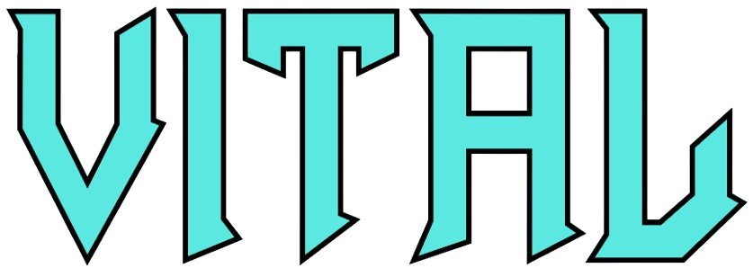
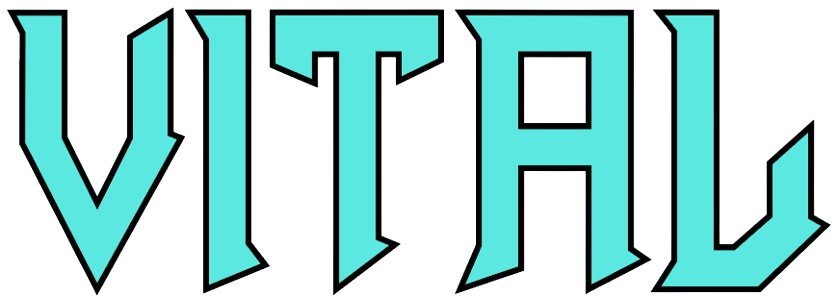

VITAL
Vital, de Matt Tytel, es un sintetizador wavetable gratuito que revoluciona el diseño de sonido. Con una interfaz dinámica y animada, puedes visualizar modulaciones y transformar tus ideas en sonidos únicos.
- Sintetizador modular: Conecta LFOs, envolventes y controles macro fácilmente.
- Interfaz intuitiva y animada: Las formas de onda reaccionan al audio en tiempo real.
- Filtros avanzados y efectos: Opciones como comb filters, distorsión y más.
- Compatible con presets gratuitos y pagos: Una comunidad activa comparte recursos constantemente.
Vital es ideal para quienes buscan explorar la producción musical sin limitaciones, desde principiantes hasta expertos. Descubre por qué está marcando tendencia en la música electrónica y más allá.